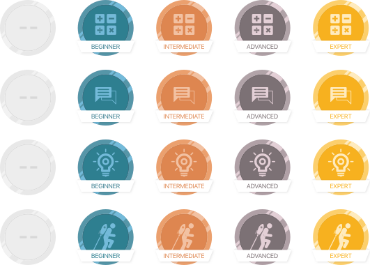

JobFlare is an app that combines job hunting with games. Users play short games that test performance in key areas including math, verbal, and memory. Based on their scores and profile, users will receive emails with relevant job opportunities. High scoring users may even be contacted directly by potential employers.
Learn more about JobFlare
For JobFlare, I was tasked with creating the wireframes and information architecture. The biggest problems I faced were getting users to return to the app and creating a feedback system in the games that was unintrusive. One way we got users to return to the app was introducing medals. We found that having an achievement system increased user retention. The medals also allow the users to see their ranking and improvement in a more visual manner. The second way we increased user retention was introducing social media sharing on their scores. By sharing their scores with friends, it creates a friendly competition. Users can battle for the higher score.
The scores screen shows the user's scores for the three categories of games. Users must play both games in a category to receive a score for that category. Users must play all six games (two in each category) to obtain an overall score. Users can continue to play the games to improve their scores and gain higher ranks.
The rankings screen is tailored to a user's specific job interests selected during the signup process. Users can see how their scores rank against others interested in the same categories and overall. If a user reaches the top ten percent overall, they have the option to view their exact numeric ranking. The higher a user scores, the more likely they are to receive job offers.
The biggest problem in the games themselves was creating a system for indicating correct and incorrect answers without interupting the gameplay or distracting the player. Since the majority of the games last only 90 seconds, feedback had to be quick, easily recognizable, and not detract from the flow of the game. I also wanted to incorporate the feedback into the game design itself. For example, in Robot Inspector, the light at the top changes red or green depending on the answer. In Mumble Jumble, the monster's facial expression and body language changes based on the answer.